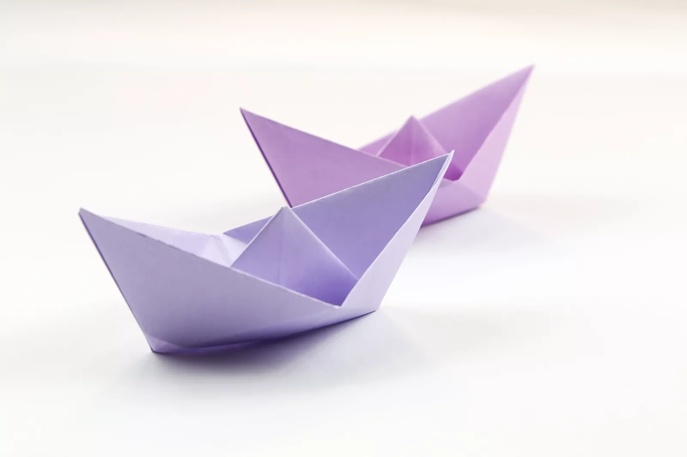
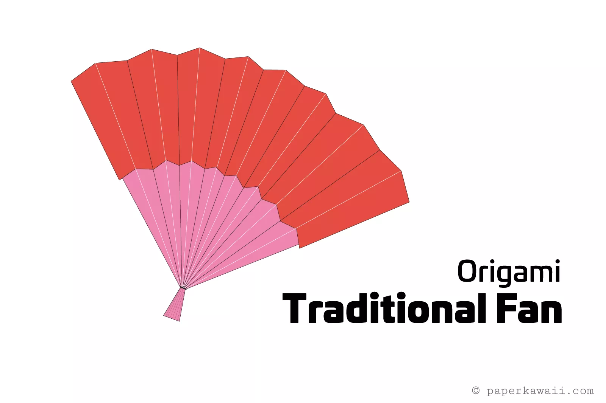

Simple Origami Designs
1. Paper Plane
 An easy paper plane is a great activity for kids and the steps are simple to remember
An easy paper plane is a great activity for kids and the steps are simple to remember
after following the diagram a few times. This particular plane is officially an origami
project, but there are many ways to fold paper planes to create unique designs and
flight patterns.
(Click Image for Tutorials)
2. Boat

This traditional origami boat is perfect for a beginner origami project.
It's also a wonderful toy, as it can float on water. Fold several to
create a bathtub fleet for a child. To make the paper boat move through the
water, put a drop of liquid soap at the back of the boat. The changing
surface tension will propel the boat forward.
(Click Image for Tutorials)
3. Fan

These origami fans couldn't be easier to make.
They're great decorations for parties and weddings.
You can also make little origami earrings with these.
Consider making special gifts for friends by using richly
patterned chiyogami paper.
(Click Image for Tutorials)
4. Tissue Holder
 This is a nifty origami tissue paper holder
This is a nifty origami tissue paper holder
for your handbag. It's a cinch to make when you
follow the origami diagram. When you're done,
use your tissue holder to store folded tissues to be
pulled out neatly.
(Click Image for Tutorials)
5. Square Candy Box
 This origami box, perfect for candy or snacks,
This origami box, perfect for candy or snacks,
is tapered at the top so anything inside will stay put.
These take a bit longer than a regular Masu box,
but the end result is worth the time. Consider making
these as party favors for a special event.
(Click Image for Tutorials)
About Us